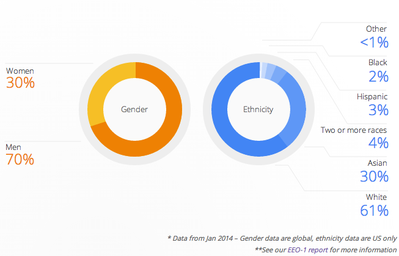

The lack of diversity in the tech industry has been a well-known issue, yet one that many tend to shy away from. In attempts to most likely preserve their image, companies tend to conceal their employment statistics. Back in May, Google attempted to address this lack of transparency from Silicon Valley by publishing a breakdown of their workforce by gender and ethnicity, and the results weren't too pretty:
Although Google is attempting to address this issue, Silicon Valley lack of transparency does not help to rectify the situation. Many tech companies have a difficult time to recruit and retain minority and female talent for numerous reasons. Tech companies blame the applicant pool, which is dominated by white men and Asians, for its lack of diversity: woman earn approximately 18 percent of all computer science degrees in the U.S. while Blacks and Hispanics represent under 10 percent of U.S. college grads each. I agree that part of the issue is educational opportunity in the United States. Particularly, many people in these groups are not exposed to computer science at early ages, but even more so, they are discouraged from entering these fields by guidance counselors and teachers alike because they don't fit the 'tech stereotype.' Such ccurences inevitably stem from the racist and sexist belief that these specific minorities groups and women are not competent enough to excel in this field. Tech companies can help to combat this by working with policy makers in order to strengthen computer science curriculum for grades K – 12, expanding educational opportunity to these underrepresented groups.
Yet this is only one side of the problem; what explains the low retention rates amongst these demographics. For instance, nearly half of the women in technology leave the field all together.
It seems as though the culture of the industry is very hostile toward anyone who doesn't conform. It can definitely be described as an almost frat-like bro culture, which in the case of women is not very welcoming. The lack of respect for women manifests in harassment, a lack of trust in their coding abilities, peers viewing them as potential dates rather than brilliant collaborators, and most importantly little representation in leadership roles.
Many have attempted to address this issue through programs and support targeting women and minorities but I personally believe that this can only be rectified if the minds of those who perpetuate the culture are changed. Inevitably, no matter how much support these groups receive, they cannot change the way they are perceived by their superiors and contemporaries. More generous maternity leave will not reduce the amount of harassment a woman receives (although I definitely think this is important) nor will support groups increase upward mobility within the field as well. I believe that diversity training needs to be implemented within these companies to ensure that all computer programmers are judged by their code rather than their race or gender.
Jensen Bouzi, August 31, 2014